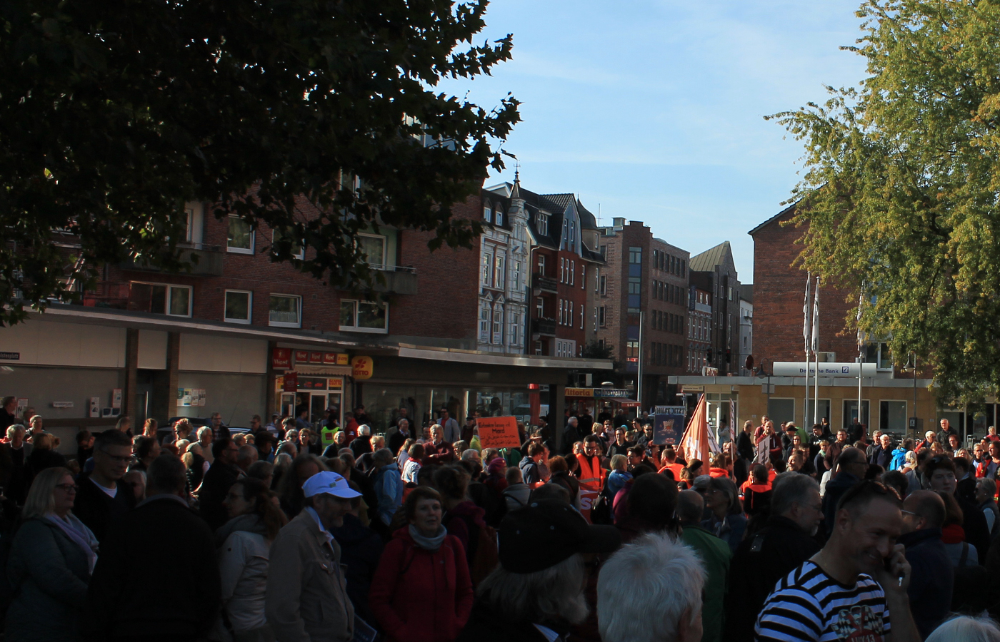

Seebrücke Kreis Pinneberg
Was ist das Bündnis Seebrücke?
Das Bündnis „Seebrücke“ – ein Zusammenschluss mehrerer Flüchtlingsinitaitiven – hatte im Juli 2018 zu Demonstrationen in deutschen Städten aufgerufen.mehr lesen weniger lesenDemonstrationsteilnehmer trugen teils orangene Rettungswesten und Rettungsringe, um auf die Seenotrettung aufmerksam zu machen und für die Seenotretter zu demonstrieren, sowie für sichere Fluchtwege und eine humane Flüchtlingspolitik. Anlass der Demonstrationen waren die Vorkommnisse um das Rettungs „Lifeline“. Das Rettungsschiff erhielt im Juni mit über 200 geretteten Menschen an Bord tagelang keine Anlege-Erlaubsnis im Mittelmeer. Unter anderem verweigerte Malta den Rettungsschiffen „Lifeline“ und „Sea-Watch 3“ die Ausfahrt aus dem Hafen. Außerdem droht dem Kapitän ein Verfahren. weiter lesenSie können uns auch auf facebook finden

Wir werden im November mit Rettungswesten, Transpis und Pappierschiffchen unseren Kreis
Pinneberg in Orange, die Farbe der Seenotrettung, tauchen! In vier Städten planen wir Aktionen und
Flashmobs:
- am 03.11 in der Pinneberger Innenstadt
- am 10.11 in Wedel am Hafen
- am 17.11 in Schenefeld
- am 24.11 in Elmshorn
Die nächste Veranstaltung ist in:
11 Tagen and 23 Stunden and18
Minuten and 21 Sekunden.

clicken Sie auf das Foto um die Petition zu unterschreiben